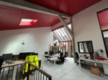
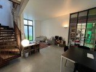

Chez GREENBIRDIE, nous avons à cœur de créer des espaces de travail agréables, fonctionnels et adaptés à l'évolution de nos équipes. L'agence de Nantes, installée au 11 impasse Juton, dispose désormais de locaux plus spacieux et plus confortables pour accueillir nos collaborateurs, partenaires et clients.

Un espace pensé pour le confort et les échanges
Ces nouveaux bureaux en duplex offrent un cadre de travail plus chaleureux et plus fluide au quotidien. L'organisation des espaces a été pensée pour favoriser à la fois la concentration individuelle et les échanges collectifs — deux dimensions essentielles dans notre activité de conseil et d'ingénierie.
Au-delà des mètres carrés supplémentaires, cette évolution reflète notre volonté de proposer un cadre de travail humain, stimulant et cohérent avec les valeurs que nous portons.


Accompagner notre croissance dans l'Ouest
L'agence de Nantes joue un rôle important dans le développement de GREENBIRDIE dans l'Ouest de la France. Elle intervient sur l'ensemble de nos domaines d'expertise :
- Achat d'énergie et stratégie contractuelle multi-sites
- Décret Tertiaire et pilotage OPERAT
- Audits énergétiques réglementaires et opérationnels
- Projets photovoltaïques en toiture, ombrières et au sol
- Accompagnement à la décarbonation industrielle
Cette implantation nous permet d'être au plus proche de nos clients et partenaires régionaux tout en poursuivant notre développement national.
Un cadre qui accompagne les projets
Nous sommes convaincus que la qualité des espaces de travail contribue directement à la qualité des projets menés. Ces nouveaux locaux nous permettent d'accueillir les équipes dans de meilleures conditions et d'accompagner sereinement les prochaines étapes du développement de GREENBIRDIE.
Contacter l'agence de Nantes
11, impasse Juton — 44000 Nantes
contact@greenbirdie.com · 01 44 08 10 50